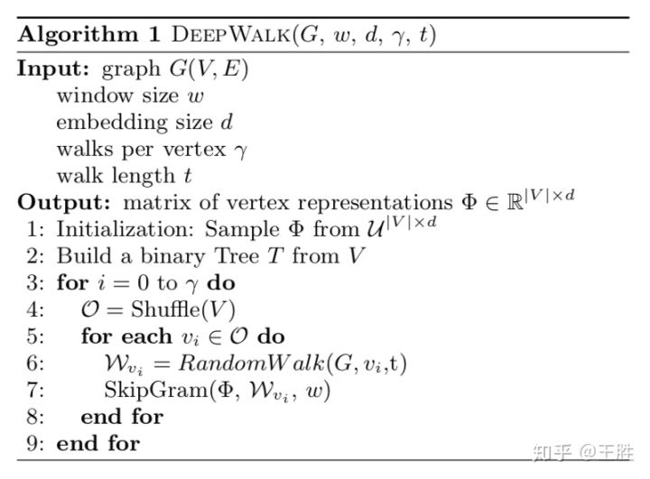
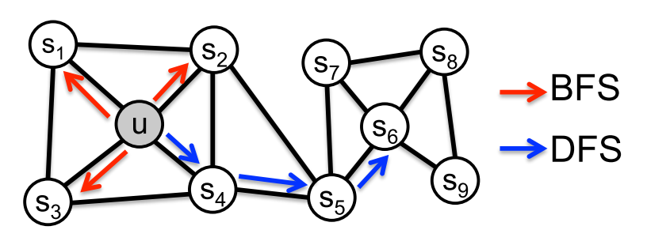
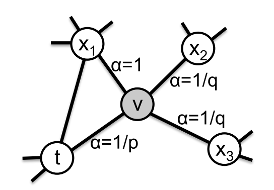

失踪人口回归。本篇文章主要集中于总结Network Embedding中经典的三个模型Deepwalk、LINE、 node2vec的核心思想，只是把我在学习过程中的一些疑问点和关注点整理总结，可能不全面，如果有错误，欢迎留言指出。
Deepwalk
从word2vec说起
deepwalk的核心思想来源于word2vec。word2vec应用于NLP领域，完成的任务是将单词根据其上下文映射到一个低维向量空间上去，使得语义相近的单词在这个低维向量空间上的距离更接近。这里主要讲基于Negative Sampling的Skip-Gram word2vec模型。
word2vec是一个简单的神经网络，包含三层：input layer、hidden layer、output layer。区别于CBOW模型，skip-gram是给定输入词，最大化上下文的概率。（CBOW相反，在此不再赘述）即：$Pr(context(w)|w)$.那么网络的输入就是某个单词，输出是所有的词是输入词的上下文的概率。但我们关注的并非是输出的概率，而是输入层到隐层的权重，这个“副产物”即我们需要的所有词的词向量。
由于我们在训练某个词时，不可能把所有词都送入神经网络中训练，所以这里使用了负采样的训练方法。以实例来说明：
考虑以下两句话：
I love cats because it’s cute.Bob do too.
I love dogs because it’s cute.Bob do too.
以第一句话为例，假设$w=$”cats”，$context(w)=$”I love because it’s cute”。那么对于$context(w)$来说，$w$是一个正例，”Bob”、”do”、”too”以及其他一些不在context中的词，就是负样本。我们每次训练时，只会选取1个正样本和依概率随机采样N个负样本（N是一个超参数，依据数据集的大小而定）。每个词的采样概率为：
$P(w)=\frac{count(w)^\alpha}{\sum_{u\in vocab}^{}count(u)^\alpha}$（$\alpha$在word2vec的paper中设置为0.75）。至于采样方法，为了加速采样过程，可以使用AliasSampling，本文不赘述。可以参考Alias Method离散分布随机取样，解释的非常直观且清楚。
那么有了一个正例和若干个负样本后，就可以用SDG等方法minimize Cross Entrophy Loss进行训练神经网络了。
那么为什么这样进行训练，语义相似的词对应的embedding在低维向量空间上的距离越接近呢？因为word2vec是假设拥有相似上下文的单词，他们的意思也接近。例如上面举的两句话，这里的dogs和cats应该是两个近义词，因为他们拥有相似的上下文。在训练过程中，我们最大化概率的$context(cats)$和$context(dogs)$也是一样的，所以这两个词的在神经网络输入层到隐层的权重也很接近，即词向量很接近了。
回到deepwalk
那么怎么从word2vec迁移到deepwalk呢？其实基本思想很简单——把node看成word，把以某种策略将node串起来的一串node看成sentence。其他的算法思想和word2vec基本相似。
所以问题的关键就回到了用什么策略将node串起来呢？deepwalk提出了truncated random walk策略。

简单总结Deepwalk，就是先指定每个节点生成通过随机游走生成几条结点串（对应参数$\gamma$）和每条结点串的长度（对应参数$t$，这里固定了每个结点串的长度对应了truncated的概念），生成一些结点串，再把这些结点串视作句子，把节点视作单词，运用word2vec算法。
LINE
相较于deepwalk的一些改进和不同点
- deepwalk只能运用于无权图，LINE可以运用于加权图
- deepwalk通过DFS构造邻域（即结点串），而LINE通过类BFS构造
相似度定义方法
LINE中采用了一套新的相似度定义方法，即一阶相似和二阶相似。
一阶相似
一阶相似很好定义，设$\vec{u_i}$、$\vec{u_j}$分别是$v_i$、$v_j$的低维向量表示，直接用$\vec{u_i}^T\cdot\vec{u_j} $表示这两个结点的相似度。一些细节我这里不再赘述。
二阶相似
存疑
Node2vec
创新点
deepwalk主要捕获的是DFS邻域信息，LINE主要捕获的是BFS邻域信息。而Node2vec提出：DFS邻域信息主要反映的是homophily（同质性）；BFS邻域信息主要反映的是structual（结构性）。真实的网络中不应该是极端地进行某一种策略，而是DFS、BFS都存在。所以node2vec提出了biased random walk。
构建邻域

我觉得这张图是值得说明一下的，它反映了不同邻域构建方法对最终embedding相似性的影响。如果我们构建邻域时采取DFS策略，那么最终embedding的相似性倾向于相邻的结点更相似；如果我们构建邻域时采取BFS策略，那么最终是倾向于拥有相似邻居的结点更相似。
Biased Random Walk(BRW)

如上图所示，BRW设置了一个搜索系数$\alpha$。首先，两个结点$v$和$x$间的转移概率（也就是从v到x的概率）$\pi_{vx}=w_{vx}$。加上搜索系数后，新的转移概率为：$\pi_{vx}=\alpha(t,x)\cdot w_{vx}$。其中，
$\alpha(t,x)=\begin{cases}
&\frac{1}{p} \text{ if } d_{tx}=0 \
& 1\text{ if } d_{tx}=1\
&\frac{1}{q} \text{ if } d_{tx}=2
\end{cases}$
从图中直观地来看，$v$是当前所在的结点，$t$是在$v$之前访问的结点，现在需要在$v$结点处做决策选择下一个搜索到的结点$x$。如果$d_{tx}=0$，说明$t$就是下一个要访问的结点，也就是$v$又回到了$x$；如果$d_{tx}=1$，说明$t$和$x$之间有直连边；如果$d_{tx}=2$，说明$x$与$t$不是直连的，换句话说，$x$离$t$比较远。
接着我们来讨论一下$p$和$q$的设置。如果$p$设置的很大、$q$设置的很小，那么$v$下一个搜索回到$t$的概率被调整的很小，下一个搜索到离$t$更远的结点的概率被调整的很大，也就是random walk的时候更倾向于去寻找离源结点远的结点，类似于DFS.反之同理，则类似于BFS.综上，通过调整$p$、$q$的大小，我们可以很好的去权衡构建邻域时DFS和BFS的倾向性。
其他
node2vec其他点和deepwalk基本一致。
写在后面
对于这三种方法的负采样策略（负采样选边、选点）还有点不清楚，之后会更新详细的负采样方法。